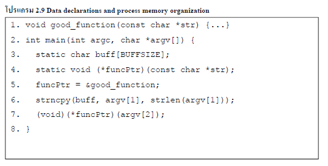

| นอกจากกระบวนการ "เติม" ข้อมูลเพื่อให้โปรแกรมทำงานตามที่แฮกเกอร์ต้องการแล้ว ยังมีอีกกระบวนการหนึ่ง คือการเปลี่ยนการทำงานของโปรแกรมด้วยการเปลี่ยนพอยเตอร์ ที่เรียกกระบวนการนี้ว่า Pointer Subterfuge ทำได้ในกรณีที่หน่วยความจำที่ต่อท้ายบัฟเฟอร์เป็นพอยเตอร์ไปยังฟังก์ชั่น กรณีเช่นนี้แฮกเกอร์สามารถเข้าไปกำหนดจุดที่ฟังก์ชันจะถูกเรียกได้ ฟังก์ชั่นตัวอย่างแสดงให้เห็นฟังก์ชันที่เสียงต่อการถูกเปลี่ยนค่าในพอยเตอร์ไปยังฟังก์ชั่น หากแฮกเกอร์สามารถรู้ได้ว่าฟังก์ชั่นที่ต้องการนั้นอยู่ที่พื้นที่หน่วยความจำใดก็สามารถเรียกฟังก์ชั่นนั้นได้ตามใจชอบกระบวนการ Pointer Subterfuge นั้นแบ่งออกเป็นแบบย่อยๆ ได้อีกสามแบบ ได้แก่ Function Pointer Subterfuge ที่แสดงในตัวอย่าง, Data Pointer Subterfuge ที่เป็นการเปลี่ยนจุดชี้ข้อมูล ทำให้โปรแกรมทำงานตามที่ต้องการ คล้ายกับการทำ Arc Injection, และ VPTR Smashing ที่เป็นรูปแบบเฉพาะของภาษา C++ ที่ทุกอ็อบเจกต์จะมีพอยเตอร์ไปยังตาราง virtual function (VTBL) เพราะแต่ละอ็อบเจกต์นั้นอาจจะมีฟังก์ชั่นที่ต่างกันไป หากแฮกเกอร์สามารถย้ายจุดชี้ไปยังตารางนี้ได้ ก็เท่ากับสามารถทำให้โปรแกรมเรียกฟังก์ชันใดก็ได้ตามต้องการ
ปฏิบัติการ ยูนิกซ์ มีทั้ง ข้อมูล และ ส่วน BSS ประกอบด้วย Global VariableและStatic Variableที่มีค่าคงที่เป็นศูนย์โดยอัตโนมัติจะถูกเก็บไว้ในส่วนนี้ โดยสามารถเรียกส่วนนี้ได้อีกกว่าส่วนของตัวแปรที่มีค่าเป็นศูนย์โดยแต่ละ Process จะมีส่วนแยกกัน
function pointer เป็น pointer ที่ใช้สำหรับการ dynamic bind ตัวแปร f ให้เป็น function ใดๆ ก็ได้ เช่นการ bind f ให้เป็น printf |
|||
|

|
|||
|
|||